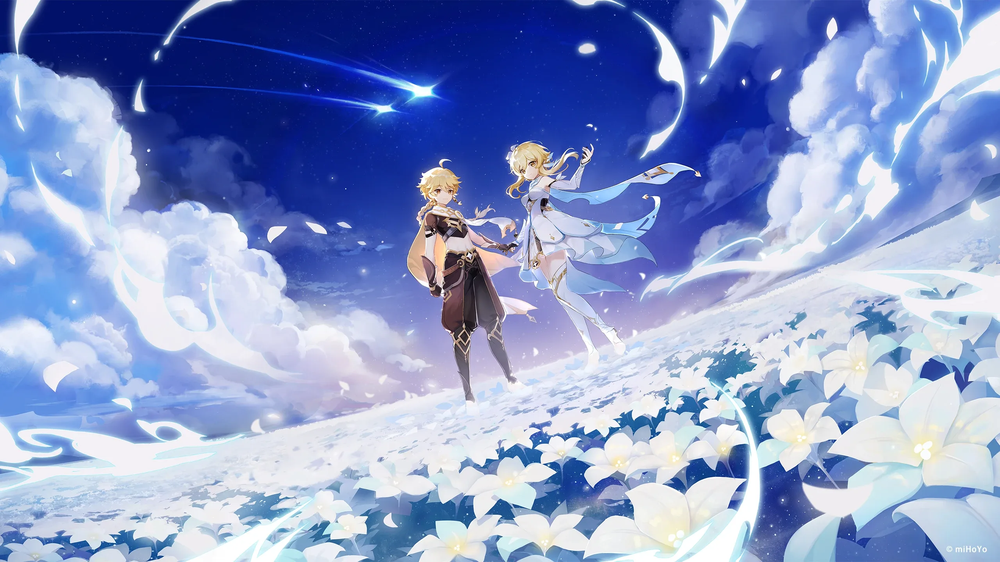

Добро пожаловать, путешественник!
Тейват - это мир, состоящий из семи регионов, каждый из которых находится под покровительством своего Архонта. На этом сайте представлен краткий путеводитель по трём самым известным регионам и их правителям.
Регионы, которые будут представлены на сайте

Подробнее об архонтах - в таблице.